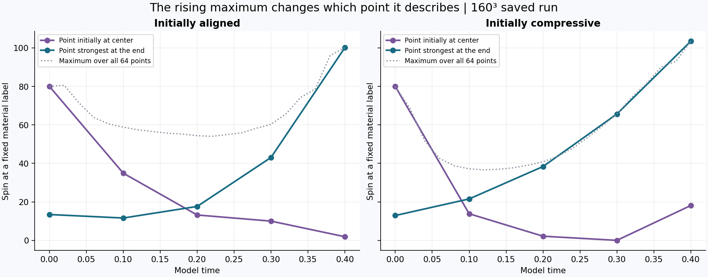
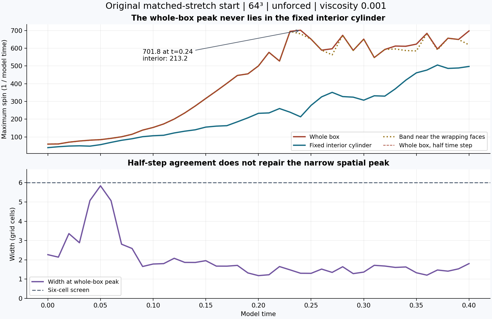
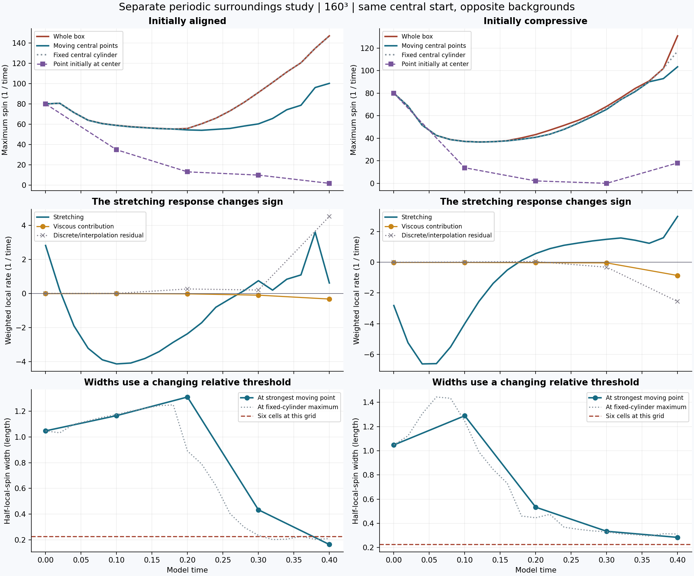
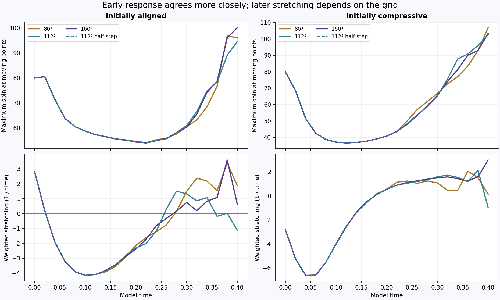

SAVED DATA · ZERO EXTERNAL FORCE · TWO DISTINCT STARTS
The central points lose spin, then regain it. Their stretching response changes sign. This occurs in the separate surroundings study. Its later response still depends on the grid.
In the original matched-stretch run, the whole-box maximum lies outside the fixed interior cylinder at every saved time. A fixed region does not follow the moving tube.




Thirty surroundings fields and 82 original fields checked. No new simulation. Full definitions and comparison tables · Summary data